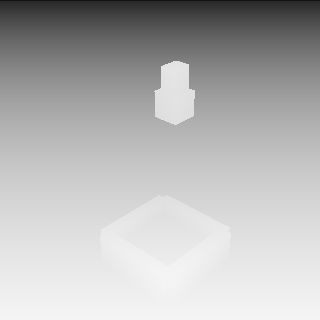

纯仿真
标签精确 · 画面是 CG
深度、分割、动作都是算出来的。但渲染太干净，策略迁到真机时，视觉差距直接吃掉精度。
01 — THE GAP
标签精确 · 画面是 CG
深度、分割、动作都是算出来的。但渲染太干净，策略迁到真机时，视觉差距直接吃掉精度。
画面真实 · 标签靠估计
画面足够像真机，但动作只能从光流或逆动力学里反推。估出来的标签，撑不起策略训练。
所以把两件事拆开：真值交给引擎，外观交给渲染器，一致性交给验证器。
02 — PIPELINE
每一段都是独立接口。换引擎、换渲染器，其余模块一行不动。
01 / 06
把一句话变成可执行的场景：物体、摆放、相机、成功判据，再检查任务在物理上确实做得成。
现在 模板 + 参数化 生产 代码智能体
规划出一条能完成任务的轨迹。动作空间的维度由本体决定，规划逻辑与形态无关。
现在 航点插值 生产 ManiSkill3 规划 / MimicGen
逐帧导出白模 RGB、深度、实例分割、物体与关节位姿、相机内外参。全部由几何算出，不是估计值。
现在 软件光线投射 生产 ManiSkill3 / SAPIEN
白模作首帧与外观参考，深度与分割作控制条件，相机走 Plücker 嵌入。它不碰物理，只负责外观。
现在 确定性替身 生产 Wan2.2-Fun-5B-Control
只读渲染像素，把夹爪找回来，和真值投到同一相机上比重投影误差。过阈值才认证，不过就重渲。
现在 颜色分割 + 重投影 生产 关键点跟踪 / 逆动力学
写成 LeRobot 形状的目录：帧、动作、指令、相机、分割、忠实度与生成配置的哈希，全部随样本走。
现在 PNG + JSONL 生产 mp4 + parquet
03 — RENDER
04 — ALIGNMENT
左边是引擎的白模画面，右边是照片级化之后。位置没有动过——外观是被渲染上去的，不是被生成出来的。

渲染器拿到的不只是白模。逐帧深度、实例分割、相机位姿一起进去，几何才是主导条件。
05 — CERTIFICATION
验证器只读渲染出来的像素和相机内参：把夹爪从画面里找回来，和引擎真值投到同一相机上比。误差单位是毫米。
0mm
p95 重投影误差 · 注入 25 mm 几何漂移
夹爪和方块被一起挪了，动作标签失效——即使画面看起来很真。
0mm
p95 重投影误差 · 阈值 12 mm
同样的渲染器，几何条件加严之后通过，样本才允许写进数据集。
重试不是再渲一次碰运气：每一轮都加严几何条件，种子与权重写进 provenance，事后可以审计。
06 — ARTIFACT
franka-0000/ ├─ meta/ │ ├─ info.json 特征描述 │ ├─ provenance.json 引擎 · 权重 · 种子 │ ├─ fidelity.json 逐帧误差与判定 │ └─ scene.json 相机 · 物体 · 判据 ├─ data/chunk-000/ │ └─ episode_000000.jsonl └─ frames/ ├─ photoreal/ png + rgb ├─ white/ png + rgb ├─ depth/ f32 · 平面 Z └─ seg/ u16 实例 id
整个目录自包含：只凭它就能重算忠实度，不需要再跑一遍引擎。
07 — MORPHOLOGY
形态差异只落在两处配置：本体（URDF 与动作空间）和任务。其余模块对形态透明。
08 — RUN
pip install -e .
embodigen gen --task "把红色方块放进盒子" --out out --resolution 96
embodigen validate --episode out/episodes/franka-0000核心只用标准库：没有 numpy、没有 GPU 也能跑完整条链路；真实后端通过 extras 挂进来。